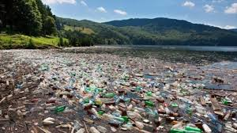

Los problemas ambientales del mundo crecen a medida que crece la humanidad. La calidad del aire es cada vez más pobre, hay menos agua dulce para alcanzar a todos, la biodiversidad se está perdiendo, los bosques están siendo talados, parece que el clima está cambiando muy rápidamente, como resultado de las emisiones de origen humano de gases de efecto invernadero y además cada vez hay menos peces en los mares.Todos estos son problemas a gran escala. Los seres humanos no son muy buenos para hacer frente a los problemas a gran escala debido a que la resolución de problemas a gran escala involucra la cooperación de seres humanos entre sí. De hecho, los seres humanos no son muy buenos para cooperar entre sí sin tratar de obtener un beneficio para sí mismos. En las pequeñas comunidades la gente tiende a ayudar a uno y otro. En las grandes ciudades se tiende a pensar cada persona en sí misma, y sálvese quien pueda.
otra forma que nos perjudica es en el aire y aqui te dejo un archivo para descargar sobre la contaminacion del aire
Cada año se arrojan a los océanos grandes cantidades de desechos y contaminantes. Muchas de estas sustancias ni siquiera existían hace 50 años. La contaminación de los océanos, en particular de las aguas costeras, se debe tanto a las actividades terrestres como a las marinas. Los fertilizantes y los pesticidas utilizados en las granjas agrícolas, los desechos industriales y las basuras nucleares, los gases de escape emitidos en las carreteras, las aguas usadas y los desperdicios, se vierten en los cursos de agua y terminan en el océano. Las emisiones a la atmósfera provocadas por la industria y los transportes, son otra fuente relevante de contaminación que proviene de la tierra. Una vez emitidos, muchos componentes químicos (cobre, níquel, mercurio, cadmio, plomo, zinc y compuestos orgánicos sintéticos) permanecen en al aire durante semanas o más. Se trasladan a través de los vientos y recaen en los océanos. Todos estos contaminantes y desechos son después redistribuidos por la superficie del globo a través de las corrientes de los mares.
Este la parte final de la pagina Ir al principio de la pagina
Si quieres saber mas tipos de contaminaciones pulse en estos botones para saber mas
